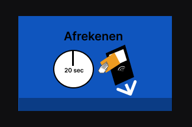

MAAS
USER CENTERED DESIGN
WAT IK HEB GEBRUIKT
- INTERVIEW ANALYSE
- EMPATHY MAP
- STORY BOARD
- PEERFEEDBACK
- AFINNITY MAP
- USER TRIP
- TRIANGULATIE CHECK
- PERSONA
- GEBRUIKERSBEHOEFTEN
- IDEEËN-CARROUSEL
- KEYPATH SCENARIO
De opdracht is om de gebruikerservaring van het koffieapparaat van maas te verbeteren. Dit doe je doormiddel van UCD technieken en methodes toe te passen.
USER TRIP
Belemmeringen
- Taal kun je alleen veranderen op het keuzescherm
- Afreken process is verwarrend
- De machine geeft niet aan wanneer je een beker moet plaatsen
- Geen servetjes bij het apparaat
INTERVIEWS
Belemmeringen
- Koffie te heet
- Je betaald maar je krijgt geen koffie of thee
Doelen
- Ze willen een lekkere bak koffie
- Drinken koffie om een rust moment te pakken
- Kwaliteit en beleving
CONCURRENTIEONDERZOEK
Belemmeringen
- Watertemperatuur die nauwkeurig word beheert
- Meerdere koffies te gelijk kunnen maken
PERSONA
- Naam: Sarah Coleman
- Geslacht: Vrouw
- Opleiding: AMFI
- Leeftijd: 22
Belemmeringen
- je betaald maar je krijgt geen koffie
- Te hete koffie
- Er zijn geen servetjes bij de koffiemachine
Doelen
- Kwaliteit
- Een bredere keuze in smaken
- Genoeg cafeine voor energie
- Afrekenen is slecht
- Te hete koffie
- Beleving is er niet
Sarah heeft behoefte aan
- 1. Kwaliteit
- 2. Energie voor in de les
- 3. Gezellige beleving
- 4. Een besturing zonder problemen
- 5. Duidelijke informatie krijgen bij acties
- 6. Servetjes bij de koffiemachine
- 7. Goede feedback op de problemen van de koffieautomaat
- 8. Ontspanning
- 9. Deadlines halen
- 10. Met vrienden ergens drinken
VERBETERINGEN
Een mooie tafel en banken bij de koffiemachine voor een gezellige sfeer

- 1. Cafeine hoeveelheid staat bij de sterkte aangegeven
- 2. Warmte kan worden aangepast
- 3. De taal kan op elk scherm veranderd worden
VERBETERINGEN
Het woord afwaarden is veranderd naar afrekenen. Een timer is toegevoegd op het scherm en een afbeeldende instructie
Er is een scherm toegevoegd met instructies dat je de beker onder de koffiezetter moet plaatsen
Er is een scherm toegevoegd met een timer wanneer de koffie klaar is. Als de koffie klaar is gaat er een pieper af om te laten weten dat je koffie klaar is.
Op het eindscherm word de snelkeuze van je bestelling laten zien
STORY BOARD
Toelichting Sarah en een vriendin halen koffie bij de koffieautomaat van Maas.
Sarah kiest een sterkte voor haar koffie doordat er caffeine waardes in milligrammen bij staan kan ze de juiste sterkte kiezen.
Sarah kiest een warmte voor haar koffie. Doordat er grades bij de warmte opties staan kan ze de juiste warmte kiezen waardoor ze niet te hete koffie krijgt.
Sarah wilt nu afrekenen en is blij dat ze duidelijke instructies krijgt bij het afrekenen.
Sarah en haar vriendin zien dat ze hun beker onder de koffiemachine moeten plaatsen en kunnen tegelijk hun koffie drinken vanwege de twee koffiezetters
Sarah en haar vriendin wachten zittend en ontspannend af bij de nieuwe tafel en zitbanken tot hun koffie klaar is.
Een pieper gaat af vanuit de koffiemachine. Sarah en haar vriendin weten nu dat hun koffie klaar is.
Sarah en haar vriendin pakken hun koffie en een servetje. Ook zien ze de snelkeuze optie van hun net bestelde koffie en weten nu voor de volgende keer hun snelkeuze optie van hun bestelde koffie.s